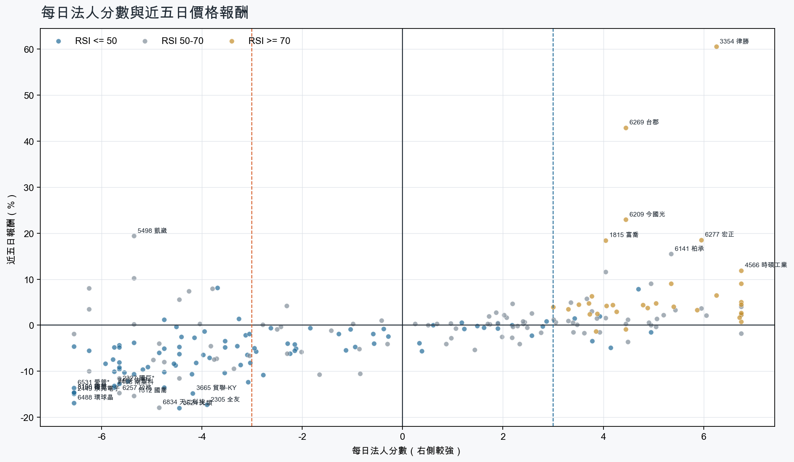
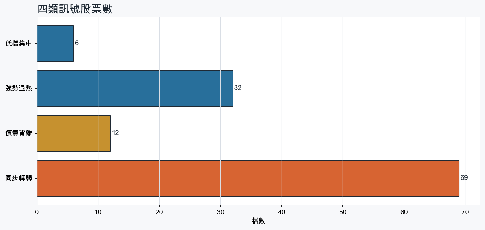
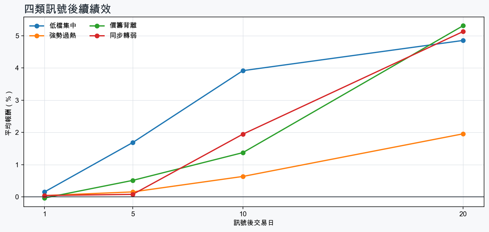

市場情緒偏空
近5日法人合計-8,863,754 張
篩選池上漲比例40.9%
籌碼好 / RSI低6 檔
籌碼差 / 價跌15 檔



EPS × PE VALUATION
法人常用的相對估值
顯示保守、基準與樂觀估值帶，不把單一數字包裝成精準目標價。
最新累計 EPS 依季數年化 × 同產業有效 P/E 的 Q25／中位數／Q75。排除本公司、非正 P/E，並以 1.5×IQR 排除離群值。估值帶是公開資料篩選值，不是法人目標價；未使用分析師預估 EPS。
MOOD × MONEY
情緒與籌碼雷達
熱度代表被討論程度；情緒分與法人方向分開計算。熱門不等於適合追價，樣本不足也不硬判多空。
| 股票 | 情緒 | 討論熱度 | 情緒 × 籌碼 | 情緒 × 基本面 |
|---|---|---|---|---|
| 2323 中環低檔集中 | 偏空 -25.0信心 75 | 1003 篇 / 108 留言 / 0 則新聞 | 法人布局、市場悲觀法人分 +4.7 | 基本面佳、情緒悲觀基本面分 +3.0 |
| 2408 南亞科同步轉弱 | 中性分歧 -12.1信心 94 | 942 篇 / 74 留言 / 3 則新聞 | 高熱分歧法人分 -5.8 | 基本面與情緒分歧基本面分 +3.6 |
| 2027 大成鋼強勢過熱 | 偏多 +22.6信心 62 | 921 篇 / 77 留言 / 1 則新聞 | 情籌共振法人分 +6.8 | 基本面與情緒共振基本面分 +3.6 |
| 3026 禾伸堂低檔集中 | 中性分歧 -5.7信心 99 | 922 篇 / 62 留言 / 3 則新聞 | 高熱分歧法人分 +5.0 | 基本面與情緒分歧基本面分 +3.6 |
| 1815 富喬強勢過熱 | 情緒高漲 +58.6信心 82 | 901 篇 / 61 留言 / 3 則新聞 | 情籌共振法人分 +4.0 | 基本面與情緒共振基本面分 +3.6 |
| 6488 環球晶同步轉弱 | 中性分歧 +0.0信心 30 | 480 篇 / 0 留言 / 3 則新聞 | 情籌混合法人分 -6.5 | 基本面與情緒分歧基本面分 -0.1 |
| 2303 聯電同步轉弱 | 中性分歧 +0.0信心 30 | 480 篇 / 0 留言 / 3 則新聞 | 情籌混合法人分 -5.5 | 基本面與情緒分歧基本面分 +3.6 |
| 5498 凱崴價籌背離 | 偏多 +29.7信心 30 | 480 篇 / 0 留言 / 3 則新聞 | 熱門但法人撤退法人分 -5.3 | 基本面與情緒共振基本面分 +3.0 |
| 4939 亞電價籌背離 | 中性分歧 +0.0信心 30 | 480 篇 / 0 留言 / 3 則新聞 | 情籌混合法人分 -5.3 | 基本面與情緒分歧基本面分 +3.0 |
| 8039 台虹價籌背離 | 偏多 +29.7信心 30 | 480 篇 / 0 留言 / 3 則新聞 | 熱門但法人撤退法人分 -4.3 | 基本面與情緒分歧基本面分 -0.1 |
| 2489 瑞軒價籌背離 | 偏多 +29.7信心 30 | 480 篇 / 0 留言 / 3 則新聞 | 熱門但法人撤退法人分 -4.8 | 基本面與情緒共振基本面分 +3.0 |
| 6532 瑞耘價籌背離 | 偏多 +29.7信心 30 | 480 篇 / 0 留言 / 3 則新聞 | 熱門但法人撤退法人分 -6.2 | 基本面與情緒共振基本面分 +3.6 |
01
籌碼好 / RSI低
優先研究基本面；法人續買且價格止穩時，才適合分批觀察。
| 股票 / 確認狀態 | 每日法人分 | 浦男式近似 | 法人加速度 | RSI / 相對強弱 | 量價確認 | 融資融券 | 每週集保確認 | 基本面 | EPS × 同業 P/E 估值 | 情緒 / 情籌 | 近期消息 | 論壇討論 |
|---|---|---|---|---|---|---|---|---|---|---|---|---|
| 3026 禾伸堂可研究 · 96 分籌碼與價格確認，可列研究清單 | +5.0法人 +2,132 張 / 3 天 | 接近 · 90中期均線偏多；法人籌碼偏多；法人買盤加速；留意未站月線 | +2,051 張近3日 +1,798 / 連續 +2 日 | 49.8相對大盤 +4.5% | 量比 1.21確認分 +3.6收盤跌破20日線 | -%融資 - 張 / 融券 - 張 | -0.50 pp1000張 +0.50 pp | 單月營收年增 +27.1%；累計營收年增 +21.2%；2026 Q2 累計 EPS 6.73仍需觀察下一期財報延續性來源：公開資訊觀測站 | 基準 NT$ 353.7估值帶 238.0–580.5現價 794.0 · 高於估值帶 · 距基準 -55.5%2026 Q2 累計 EPS 6.73 → 年化 13.46電子零組件同業 P/E 17.68／26.28／43.13 · n=147 · 信心中等以 Q2 累計 EPS 年化，不等同分析師全年預估來源：TWSE／TPEx 每日本益比 | 中性分歧 -5.7熱度 92 / 信心 99高熱分歧 | 被動元件3檔漲停 禾伸堂重回8百俱樂部ETtoday財經雲 · 10/20焦點股》禾伸堂：內資送暖喊900元 直奔漲停自由財經 · 10/20 | [新聞] 禾伸堂輝達Vera Rubin訂單塞爆 不僅漲價PTT Stock · 10-16 · 57 留言[情報] 2491 吉祥全 子公司買禾伸堂，賣南電 賺PTT Stock · 10-16 · 5 留言 |
| 9910 豐泰可研究 · 81 分籌碼與價格確認，可列研究清單 | +3.9法人 +4,892 張 / 5 天 | 接近 · 71站上月線；法人籌碼偏多；法人買盤加速；留意中期均線未翻多、相對強度普通 | +1,618 張近3日 +3,481 / 連續 +7 日 | 47.6相對大盤 -0.6% | 量比 1.27確認分 +2.920日線低於60日線 | -%融資 - 張 / 融券 - 張 | -0.22 pp1000張 -0.35 pp | 2026 Q2 累計 EPS 1.71單月營收年增 -4.8%；累計營收年增 -3.1%；2026 Q2 累計營益率 5.0%來源：公開資訊觀測站 | 基準 NT$ 40.39估值帶 32.46–49.18現價 68.70 · 高於估值帶 · 距基準 -41.2%2026 Q2 累計 EPS 1.71 → 年化 3.42運動休閒同業 P/E 9.49／11.81／14.38 · n=20 · 信心中等以 Q2 累計 EPS 年化，不等同分析師全年預估來源：TWSE／TPEx 每日本益比 | 樣本不足 +0.0熱度 0 / 信心 0情緒樣本不足 | 近期沒有通過股票語境篩選的新聞 | 近期沒有明確提及本股的論壇樣本 |
| 6290 良維等待確認 · 61 分籌碼有訊號，但價格尚未確認 | +4.2法人 +3,906 張 / 3 天 | 未命中 · 54中期均線偏多；法人籌碼偏多；買超具延續性；留意未站月線、法人買盤未加速 | -8,354 張近3日 -2,460 / 連續 -1 日 | 42.7相對大盤 -5.1% | 量比 0.62確認分 -3.5收盤跌破20日線；近20日弱於大盤；成交量不足；法人買盤減速 | -3.3%融資 -547 張 / 融券 -1 張 | +2.51 pp1000張 +0.60 pp | 單月營收年增 +15.7%；累計營收年增 +10.1%；2026 Q2 累計 EPS 4.50仍需觀察下一期財報延續性來源：公開資訊觀測站 | 基準 NT$ 236.5估值帶 159.1–391.9現價 252.5 · 估值帶內 · 距基準 -6.3%2026 Q2 累計 EPS 4.50 → 年化 9.00電子零組件同業 P/E 17.68／26.28／43.55 · n=147 · 信心中等以 Q2 累計 EPS 年化，不等同分析師全年預估來源：TWSE／TPEx 每日本益比 | 樣本不足 +0.0熱度 0 / 信心 0情緒樣本不足 | 近期沒有通過股票語境篩選的新聞 | 近期沒有明確提及本股的論壇樣本 |
| 3702 大聯大等待確認 · 65 分籌碼有訊號，但價格尚未確認 | +3.8法人 +8,445 張 / 4 天 | 接近 · 73中期均線偏多；法人籌碼偏多；買超具延續性；留意未站月線、法人買盤未加速 | -9,362 張近3日 +1,412 / 連續 +1 日 | 46.3相對大盤 +2.2% | 量比 0.88確認分 -1.7收盤跌破20日線；法人買盤減速 | -%融資 - 張 / 融券 - 張 | +0.30 pp1000張 +0.40 pp | 單月營收年增 +146.5%；累計營收年增 +72.5%；2026 Q2 累計 EPS 8.422026 Q2 累計營益率 2.6%來源：公開資訊觀測站 | 基準 NT$ 206.8估值帶 169.2–361.2現價 113.5 · 低於估值帶 · 距基準 +82.2%2026 Q2 累計 EPS 8.42 → 年化 16.84電子通路同業 P/E 10.05／12.28／21.45 · n=30 · 信心中等以 Q2 累計 EPS 年化，不等同分析師全年預估來源：TWSE／TPEx 每日本益比 | 偏多 +29.7熱度 48 / 信心 30情籌共振 | 《投信買超7-5》富世達(250)、大聯大(246)、禾伸堂(243)富聯網 · 10/200056 元大高股息- 我查網路大聯大市值目前排85名未來股價,只要投信主力真的發動... - 股市爆料同學會CMoney · 10/20 | 近期沒有明確提及本股的論壇樣本 |
| 2323 中環等待確認 · 60 分籌碼有訊號，但價格尚未確認 | +4.7法人 +9,196 張 / 3 天 | 接近 · 72中期均線偏多；法人籌碼偏多；買超具延續性；留意未站月線、法人買盤未加速 | -9,664 張近3日 -791 / 連續 +1 日 | 47.3相對大盤 -2.1% | 量比 0.91確認分 -3.5收盤跌破20日線；法人買盤減速 | -%融資 - 張 / 融券 - 張 | +0.29 pp1000張 +0.08 pp | 單月營收年增 +34.5%；累計營收年增 +17.2%；2026 Q2 累計 EPS 0.992026 Q2 累計營益率 4.7%來源：公開資訊觀測站 | 基準 NT$ 49.22估值帶 25.05–70.84現價 11.70 · 低於估值帶 · 距基準 +320.7%2026 Q2 累計 EPS 0.99 → 年化 1.98光電同業 P/E 12.65／24.86／35.78 · n=67 · 信心中等以 Q2 累計 EPS 年化，不等同分析師全年預估來源：TWSE／TPEx 每日本益比 | 偏空 -25.0熱度 100 / 信心 75法人布局、市場悲觀 | 近期沒有通過股票語境篩選的新聞 | [情報] 2323 中環 買聯亞,國巨,光聖,賣南亞科賠PTT Stock · 10-16 · 38 留言[情報] 2323 中環 買南亞科1,200張、穩懋629張PTT Stock · 10-20 · 36 留言 |
| 3714 富采等待確認 · 62 分籌碼有訊號，但價格尚未確認 | +3.4法人 +2,922 張 / 4 天 | 未命中 · 57中期均線偏多；法人籌碼偏多；法人買盤加速；留意未站月線、明顯弱於大盤 | +688 張近3日 +1,345 / 連續 +3 日 | 37.4相對大盤 -5.8% | 量比 0.32確認分 -1.1收盤跌破20日線；近20日弱於大盤；成交量不足 | -%融資 - 張 / 融券 - 張 | -0.14 pp1000張 +0.12 pp | 單月營收年增 +18.8%；累計營收年增 +7.5%；2026 Q2 累計 EPS 1.492026 Q2 累計營益率 -5.9%來源：公開資訊觀測站 | 基準 NT$ 70.21估值帶 37.07–106.6現價 61.70 · 估值帶內 · 距基準 +13.8%2026 Q2 累計 EPS 1.49 → 年化 2.98光電同業 P/E 12.44／23.56／35.78 · n=68 · 信心較低以 Q2 累計 EPS 年化，不等同分析師全年預估；交易所無有效本益比，無法交叉檢核近四季 EPS來源：TWSE／TPEx 每日本益比 | 樣本不足 +0.0熱度 29 / 信心 10情緒樣本不足 | 3714 富采- 股市最新爆料，掌握股友們對眾個股股價、技術分析、新聞的第一手... - 股市爆料同學會CMoney · 10/19 | 近期沒有明確提及本股的論壇樣本 |
02
籌碼好 / RSI高
趨勢強但不追價，等待量縮、RSI降溫或回測支撐。
| 股票 / 確認狀態 | 每日法人分 | 浦男式近似 | 法人加速度 | RSI / 相對強弱 | 量價確認 | 融資融券 | 每週集保確認 | 基本面 | EPS × 同業 P/E 估值 | 情緒 / 情籌 | 近期消息 | 論壇討論 |
|---|---|---|---|---|---|---|---|---|---|---|---|---|
| 4566 時碩工業等待拉回 · 100 分等拉回，不追價 | +6.8法人 +3,368 張 / 5 天 | 接近 · 86站上月線；中期均線偏多；法人籌碼偏多；留意量能異常、動能位置非最佳 | +2,714 張近3日 +2,948 / 連續 +5 日 | 74.4相對大盤 +32.6% | 量比 3.04確認分 +5.3價格、量能與籌碼未見明顯弱項 | -%融資 - 張 / 融券 - 張 | +2.79 pp1000張 +0.67 pp | 單月營收年增 +44.6%；累計營收年增 +23.4%；2026 Q2 累計 EPS 0.992026 Q2 累計營益率 4.3%來源：公開資訊觀測站 | 基準 NT$ 38.75估值帶 26.77–57.70現價 85.80 · 高於估值帶 · 距基準 -54.8%2026 Q2 累計 EPS 0.99 → 年化 1.98電機機械同業 P/E 13.52／19.57／29.14 · n=73 · 信心中等以 Q2 累計 EPS 年化，不等同分析師全年預估來源：TWSE／TPEx 每日本益比 | 偏多 +29.7熱度 48 / 信心 30情籌共振 | 4566 時碩工業- 時碩泰國春武里超級園區啟用新產能接棒、啟動第二成長曲線- 股市爆料同學會CMoney · 10/20時碩工業TPU水冷出貨排至明年H1，磁浮壓縮機再擴產台視全球資訊網 · 10/16 | 近期沒有明確提及本股的論壇樣本 |
| 6278 台表科等待拉回 · 100 分等拉回，不追價 | +6.8法人 +21,365 張 / 5 天 | 接近 · 83站上月線；中期均線偏多；法人籌碼偏多；留意法人買盤未加速、RSI過熱 | -12,653 張近3日 +6,996 / 連續 +10 日 | 78.3相對大盤 +56.5% | 量比 1.13確認分 +2.5法人買盤減速 | -%融資 - 張 / 融券 - 張 | +11.71 pp1000張 +12.77 pp | 單月營收年增 +15.9%；累計營收年增 +6.5%；2026 Q2 累計 EPS 4.932026 Q2 累計營益率 6.0%來源：公開資訊觀測站 | 基準 NT$ 219.5估值帶 121.5–352.8現價 288.0 · 估值帶內 · 距基準 -23.8%2026 Q2 累計 EPS 4.93 → 年化 9.86光電同業 P/E 12.32／22.26／35.78 · n=67 · 信心中等以 Q2 累計 EPS 年化，不等同分析師全年預估來源：TWSE／TPEx 每日本益比 | 樣本不足 +9.9熱度 29 / 信心 10情緒樣本不足 | 外資暗藏台股伏兵！台表科、長榮等15檔逆勢加碼分析師點名「這些持股」先轉強- 日報工商時報 · 10/20 | 近期沒有明確提及本股的論壇樣本 |
| 2027 大成鋼等待拉回 · 100 分等拉回，不追價 | +6.8法人 +26,901 張 / 5 天 | 命中 · 84站上月線；中期均線偏多；法人籌碼偏多；留意法人買盤未加速、量能尚未確認 | -843 張近3日 +15,330 / 連續 +10 日 | 70.0相對大盤 +6.0% | 量比 0.74確認分 +2.9法人買盤減速 | -%融資 - 張 / 融券 - 張 | +0.71 pp1000張 +0.54 pp | 單月營收年增 +41.1%；累計營收年增 +35.0%；2026 Q2 累計 EPS 3.10仍需觀察下一期財報延續性來源：公開資訊觀測站 | 基準 NT$ 78.18估值帶 65.78–95.85現價 49.95 · 低於估值帶 · 距基準 +56.5%2026 Q2 累計 EPS 3.10 → 年化 6.20鋼鐵工業同業 P/E 10.61／12.61／15.46 · n=27 · 信心中等以 Q2 累計 EPS 年化，不等同分析師全年預估來源：TWSE／TPEx 每日本益比 | 偏多 +22.6熱度 92 / 信心 62情籌共振 | 2027年高階玻纖布續缺 富喬擴產營運旺亮燈漲停經濟日報 · 10/19 | [新聞] IMF發布報告 預計中國經濟2027年進一步放PTT Stock · 10-17 · 77 留言 |
| 8213 志超等待拉回 · 95 分等拉回，不追價 | +6.2法人 +3,562 張 / 5 天 | 命中 · 84站上月線；中期均線偏多；法人籌碼偏多；留意法人買盤未加速、量能尚未確認 | -1,663 張近3日 +1,214 / 連續 +10 日 | 77.2相對大盤 +25.9% | 量比 2.77確認分 +1.8法人買盤減速 | -%融資 - 張 / 融券 - 張 | +1.78 pp1000張 +2.80 pp | 單月營收年增 +50.6%；累計營收年增 +20.8%；2026 Q2 累計 EPS 0.932026 Q2 累計營益率 3.5%來源：公開資訊觀測站 | 基準 NT$ 50.02估值帶 32.88–81.00現價 41.00 · 估值帶內 · 距基準 +22.0%2026 Q2 累計 EPS 0.93 → 年化 1.86電子零組件同業 P/E 17.68／26.89／43.55 · n=147 · 信心中等以 Q2 累計 EPS 年化，不等同分析師全年預估來源：TWSE／TPEx 每日本益比 | 樣本不足 +0.0熱度 29 / 信心 10情緒樣本不足 | 【11:49 即時新聞】志超(8213)放量走強，法人買盤延續支撐股價CMoney投資網誌 · 10/20 | 近期沒有明確提及本股的論壇樣本 |
| 3005 神基等待拉回 · 97 分等拉回，不追價 | +5.9法人 +6,117 張 / 5 天 | 命中 · 89站上月線；中期均線偏多；法人籌碼偏多；留意法人買盤未加速、動能位置非最佳 | -475 張近3日 +3,381 / 連續 +8 日 | 71.4相對大盤 +4.2% | 量比 1.87確認分 +2.6法人買盤減速 | -%融資 - 張 / 融券 - 張 | +0.42 pp1000張 +0.18 pp | 單月營收年增 +16.3%；累計營收年增 +10.7%；2026 Q2 累計 EPS 4.27仍需觀察下一期財報延續性來源：公開資訊觀測站 | 基準 NT$ 150.1估值帶 107.2–207.4現價 123.0 · 估值帶內 · 距基準 +22.0%2026 Q2 累計 EPS 4.27 → 年化 8.54電腦及週邊同業 P/E 12.55／17.57／24.29 · n=80 · 信心中等以 Q2 累計 EPS 年化，不等同分析師全年預估來源：TWSE／TPEx 每日本益比 | 中性分歧 +0.0熱度 40 / 信心 20情籌混合 | 【12:40 即時新聞】神基(3005)盤中續強，高殖利率題材受關注CMoney投資網誌 · 10/203005 神基- 伺服器機櫃族群為何走強？3檔重點觀察- 股市爆料同學會CMoney · 10/20 | 近期沒有明確提及本股的論壇樣本 |
| 4720 德淵等待拉回 · 100 分等拉回，不追價 | +5.3法人 +3,089 張 / 4 天 | 命中 · 96站上月線；中期均線偏多；法人籌碼偏多；留意動能位置非最佳 | +1,215 張近3日 +1,869 / 連續 +2 日 | 71.1相對大盤 +42.6% | 量比 2.08確認分 +6.5價格、量能與籌碼未見明顯弱項 | -%融資 - 張 / 融券 - 張 | -0.30 pp1000張 -0.44 pp | 單月營收年增 +33.0%；累計營收年增 +16.4%；2026 Q2 累計 EPS 0.132026 Q2 累計營益率 1.3%來源：公開資訊觀測站 | 基準 NT$ 5.09估值帶 3.51–7.07現價 26.60 · 高於估值帶 · 距基準 -80.8%2026 Q2 累計 EPS 0.13 → 年化 0.26化學工業同業 P/E 13.49／19.59／27.19 · n=33 · 信心較低以 Q2 累計 EPS 年化，不等同分析師全年預估；年化 EPS 為交易所近四季 EPS 的 0.46 倍，需保守解讀來源：TWSE／TPEx 每日本益比 | 樣本不足 +9.9熱度 29 / 信心 10情緒樣本不足 | 【10:58 即時新聞】德淵(4720) 盤中走強，低貝他防禦與營收創高成焦點CMoney投資網誌 · 10/20 | 近期沒有明確提及本股的論壇樣本 |
| 6209 今國光等待拉回 · 98 分等拉回，不追價 | +4.5法人 +12,591 張 / 3 天 | 接近 · 83站上月線；中期均線偏多；法人籌碼偏多；留意法人買盤未加速、RSI過熱 | -4,766 張近3日 +5,818 / 連續 +1 日 | 90.2相對大盤 +43.6% | 量比 1.65確認分 +2.5法人買盤減速 | -%融資 - 張 / 融券 - 張 | +9.85 pp1000張 +10.39 pp | 單月營收年增 +81.6%；累計營收年增 +71.4%；2026 Q2 累計 EPS 1.53仍需觀察下一期財報延續性來源：公開資訊觀測站 | 基準 NT$ 68.12估值帶 37.70–108.5現價 112.0 · 高於估值帶 · 距基準 -39.2%2026 Q2 累計 EPS 1.53 → 年化 3.06光電同業 P/E 12.32／22.26／35.46 · n=67 · 信心中等以 Q2 累計 EPS 年化，不等同分析師全年預估來源：TWSE／TPEx 每日本益比 | 中性分歧 +0.0熱度 48 / 信心 30情籌混合 | 今日漲停股｜PCB與光學元件接棒逆勢領漲，台郡、今國光、力致攻亮燈1020｜豐雲學堂2026 年 10 月永豐金證券 · 10/20光學元件夯！今國光9月營收創新高 強攻漲停、1.9萬張等買TVBS · 10/20 | 近期沒有明確提及本股的論壇樣本 |
| 1815 富喬等待拉回 · 100 分等拉回，不追價 | +4.0法人 +36,105 張 / 2 天 | 接近 · 85站上月線；中期均線偏多；法人籌碼偏多；留意買超延續不足、RSI過熱 | +66,852 張近3日 +53,508 / 連續 -1 日 | 79.7相對大盤 +37.5% | 量比 2.39確認分 +6.5價格、量能與籌碼未見明顯弱項 | -1.7%融資 -777 張 / 融券 +1,772 張 | +1.25 pp1000張 +1.22 pp | 單月營收年增 +82.1%；累計營收年增 +54.9%；2026 Q2 累計 EPS 2.24仍需觀察下一期財報延續性來源：公開資訊觀測站 | 基準 NT$ 117.7估值帶 79.21–193.2現價 154.0 · 估值帶內 · 距基準 -23.6%2026 Q2 累計 EPS 2.24 → 年化 4.48電子零組件同業 P/E 17.68／26.28／43.13 · n=147 · 信心中等以 Q2 累計 EPS 年化，不等同分析師全年預估來源：TWSE／TPEx 每日本益比 | 情緒高漲 +58.6熱度 90 / 信心 82情籌共振 | 熱門股》獲利跳增 富喬帶量漲停攻新高自由財經 · 10/20金居、富喬...PCB上游材料誰能追？官股投顧指引來了這檔EPS1.64元→9.3元：目標價同步曝光- 上市櫃中時新聞網 · 10/20 | [情報] 1815 富喬 9月自結:0.56 年增:273.33%PTT Stock · 10-16 · 61 留言 |
| 5469 瀚宇博等待拉回 · 100 分等拉回，不追價 | +4.9法人 +3,561 張 / 5 天 | 接近 · 80站上月線；中期均線偏多；法人籌碼偏多；留意量能異常、RSI過熱 | +2,762 張近3日 +3,071 / 連續 +5 日 | 82.5相對大盤 +17.1% | 量比 3.18確認分 +5.3價格、量能與籌碼未見明顯弱項 | -%融資 - 張 / 融券 - 張 | +1.12 pp1000張 +1.28 pp | 單月營收年增 +36.2%；累計營收年增 +26.2%；2026 Q2 累計 EPS 2.052026 Q2 累計營益率 7.4%來源：公開資訊觀測站 | 基準 NT$ 110.2估值帶 72.94–178.6現價 85.50 · 估值帶內 · 距基準 +28.9%2026 Q2 累計 EPS 2.05 → 年化 4.10電子零組件同業 P/E 17.79／26.89／43.55 · n=147 · 信心中等以 Q2 累計 EPS 年化，不等同分析師全年預估來源：TWSE／TPEx 每日本益比 | 樣本不足 +0.0熱度 29 / 信心 10情緒樣本不足 | 【09:30 即時新聞】瀚宇博(5469)股價走強，庫藏股完成後買盤關注CMoney投資網誌 · 10/19 | 近期沒有明確提及本股的論壇樣本 |
| 9904 寶成等待拉回 · 95 分等拉回，不追價 | +6.8法人 +41,455 張 / 5 天 | 命中 · 85站上月線；中期均線偏多；法人籌碼偏多；留意法人買盤未加速、動能位置非最佳 | -10,932 張近3日 +20,037 / 連續 +10 日 | 76.9相對大盤 +7.0% | 量比 1.22確認分 +2.3法人買盤減速 | -%融資 - 張 / 融券 - 張 | +1.36 pp1000張 +1.31 pp | 單月營收年增 +10.4%；2026 Q2 累計 EPS 2.37累計營收年增 -0.5%；2026 Q2 累計營益率 2.3%來源：公開資訊觀測站 | 基準 NT$ 59.06估值帶 50.62–69.82現價 26.55 · 低於估值帶 · 距基準 +122.5%2026 Q2 累計 EPS 2.37 → 年化 4.74運動休閒同業 P/E 10.68／12.46／14.73 · n=19 · 信心中等以 Q2 累計 EPS 年化，不等同分析師全年預估來源：TWSE／TPEx 每日本益比 | 中性分歧 +0.0熱度 48 / 信心 30情籌混合 | 寶成(9904) 10/20 三大法人買賣超CMoney · 10/20《投信買超7-2》王道銀(1569)、高鐵(1381)、寶成(1165)富聯網 · 10/20 | 近期沒有明確提及本股的論壇樣本 |
| 2105 正新等待拉回 · 96 分等拉回，不追價 | +5.4法人 +27,968 張 / 5 天 | 接近 · 79站上月線；法人籌碼偏多；買超具延續性；留意中期均線未翻多、法人買盤未加速 | -2,098 張近3日 +13,865 / 連續 +9 日 | 75.0相對大盤 +6.6% | 量比 1.30確認分 +3.420日線低於60日線；法人買盤減速 | -%融資 - 張 / 融券 - 張 | +0.42 pp1000張 +0.64 pp | 單月營收年增 +12.5%；累計營收年增 +6.6%；2026 Q2 累計 EPS 1.05仍需觀察下一期財報延續性來源：公開資訊觀測站 | 基準 NT$ 24.04估值帶 16.34–30.70現價 32.10 · 高於估值帶 · 距基準 -25.1%2026 Q2 累計 EPS 1.05 → 年化 2.10橡膠工業同業 P/E 7.78／11.45／14.62 · n=7 · 信心較低以 Q2 累計 EPS 年化，不等同分析師全年預估來源：TWSE／TPEx 每日本益比 | 偏多 +19.8熱度 40 / 信心 20情籌混合 | 車胎少賣70萬條反而更賺 正新半年獲利增45％的秘密Yahoo新聞 · 08/28《外資買超18-2》中華電(3344)、正新(3253)、台郡(3209)富聯網 · 10/20 | 近期沒有明確提及本股的論壇樣本 |
| 4938 和碩等待拉回 · 99 分等拉回，不追價 | +3.7法人 +17,960 張 / 4 天 | 命中 · 96站上月線；中期均線偏多；法人籌碼偏多；留意動能位置非最佳 | +1,067 張近3日 +17,998 / 連續 +3 日 | 74.8相對大盤 +16.1% | 量比 1.22確認分 +5.0價格、量能與籌碼未見明顯弱項 | -%融資 - 張 / 融券 - 張 | +0.60 pp1000張 +0.72 pp | 單月營收年增 +86.9%；累計營收年增 +13.8%；2026 Q2 累計 EPS 2.262026 Q2 累計營益率 1.4%來源：公開資訊觀測站 | 基準 NT$ 78.42估值帶 56.73–109.8現價 105.0 · 估值帶內 · 距基準 -25.3%2026 Q2 累計 EPS 2.26 → 年化 4.52電腦及週邊同業 P/E 12.55／17.35／24.29 · n=80 · 信心中等以 Q2 累計 EPS 年化，不等同分析師全年預估來源：TWSE／TPEx 每日本益比 | 偏多 +29.7熱度 48 / 信心 30情籌共振 | 【13:21 即時新聞】和碩(4938)盤中續揚，外資買盤搭配營收創高吸睛CMoney投資網誌 · 10/20《法人機構上市買超前20名2-2》和碩(7,651)、微星(5,985)富聯網 · 10/20 | 近期沒有明確提及本股的論壇樣本 |
| 2377 微星等待拉回 · 100 分等拉回，不追價 | +5.0法人 +17,849 張 / 4 天 | 接近 · 86站上月線；中期均線偏多；法人籌碼偏多；留意RSI過熱 | +2,998 張近3日 +11,634 / 連續 +1 日 | 80.0相對大盤 +7.5% | 量比 2.12確認分 +6.4價格、量能與籌碼未見明顯弱項 | -%融資 - 張 / 融券 - 張 | +1.89 pp1000張 +1.02 pp | 單月營收年增 +1.8%；2026 Q2 累計 EPS 7.59累計營收年增 -5.5%；2026 Q2 累計營益率 6.7%來源：公開資訊觀測站 | 基準 NT$ 266.7估值帶 190.5–368.7現價 164.5 · 低於估值帶 · 距基準 +62.1%2026 Q2 累計 EPS 7.59 → 年化 15.18電腦及週邊同業 P/E 12.55／17.57／24.29 · n=80 · 信心中等以 Q2 累計 EPS 年化，不等同分析師全年預估來源：TWSE／TPEx 每日本益比 | 中性分歧 +0.0熱度 48 / 信心 30情籌混合 | 【12:33 即時新聞】微星(2377)盤中走強，AI PC 與伺服器布局受關注CMoney投資網誌 · 10/20微星聯手Activision推出RTX 5080 16GB聯名顯示卡：10月23日限定上市XFastest News · 10/16 | 近期沒有明確提及本股的論壇樣本 |
| 2912 統一超等待拉回 · 100 分等拉回，不追價 | +6.8法人 +16,884 張 / 5 天 | 接近 · 71站上月線；法人籌碼偏多；法人買盤加速；留意中期均線未翻多、量能尚未確認 | +823 張近3日 +9,487 / 連續 +10 日 | 81.2相對大盤 +4.4% | 量比 0.71確認分 +3.820日線低於60日線 | -%融資 - 張 / 融券 - 張 | -0.13 pp1000張 -0.27 pp | 單月營收年增 +7.8%；累計營收年增 +5.7%；2026 Q2 累計 EPS 6.032026 Q2 累計營益率 4.2%來源：公開資訊觀測站 | 基準 NT$ 167.2估值帶 96.60–208.8現價 227.0 · 高於估值帶 · 距基準 -26.4%2026 Q2 累計 EPS 6.03 → 年化 12.06貿易百貨同業 P/E 8.01／13.86／17.31 · n=10 · 信心中等以 Q2 累計 EPS 年化，不等同分析師全年預估來源：TWSE／TPEx 每日本益比 | 樣本不足 +0.0熱度 29 / 信心 10情緒樣本不足 | 【13:16 即時新聞】統一超(2912)盤中穩步走強，買盤聚焦法人與主力同步偏多CMoney投資網誌 · 10/19 | 近期沒有明確提及本股的論壇樣本 |
| 1477 聚陽等待拉回 · 89 分等拉回，不追價 | +6.8法人 +4,410 張 / 5 天 | 接近 · 63站上月線；法人籌碼偏多；買超具延續性；留意中期均線未翻多、法人買盤未加速 | -2,986 張近3日 +1,043 / 連續 +10 日 | 79.7相對大盤 +7.0% | 量比 0.51確認分 +0.920日線低於60日線；成交量不足；法人買盤減速 | -%融資 - 張 / 融券 - 張 | +0.49 pp1000張 -1.15 pp | 單月營收年增 +24.0%；累計營收年增 +0.2%；2026 Q2 累計 EPS 7.65仍需觀察下一期財報延續性來源：公開資訊觀測站 | 基準 NT$ 199.2估值帶 156.1–286.7現價 207.5 · 估值帶內 · 距基準 -4.0%2026 Q2 累計 EPS 7.65 → 年化 15.30紡織纖維同業 P/E 10.20／13.02／18.74 · n=34 · 信心中等以 Q2 累計 EPS 年化，不等同分析師全年預估來源：TWSE／TPEx 每日本益比 | 中性分歧 +9.9熱度 48 / 信心 30情籌混合 | 【1020台股盤前】台股下影線狂拉650點！外資轉買櫃買中小、投信持續買超，巴菲特護城河鎖定【聚陽】、【聯強】、【儒鴻】永豐金證券 · 10/20《投信買超7-6》聚陽(179)、高股息(173)、允強(165)富聯網 · 10/20 | 近期沒有明確提及本股的論壇樣本 |
03
籌碼差 / 股價上漲
可能是事件行情或軋空；沒有籌碼改善前避免追高。
| 股票 / 確認狀態 | 每日法人分 | 浦男式近似 | 法人加速度 | RSI / 相對強弱 | 量價確認 | 融資融券 | 每週集保確認 | 基本面 | EPS × 同業 P/E 估值 | 情緒 / 情籌 | 近期消息 | 論壇討論 |
|---|---|---|---|---|---|---|---|---|---|---|---|---|
| 5498 凱崴風險警示 · 43 分背離警戒，避免追高 | -5.3法人 -2,547 張 / 1 天 | 接近 · 65站上月線；中期均線偏多；明顯強於大盤；留意法人籌碼偏弱、法人買盤未加速 | -1,345 張近3日 -1,906 / 連續 -4 日 | 69.7相對大盤 +23.2% | 量比 7.27確認分 +1.4法人買盤減速 | +4.8%融資 +292 張 / 融券 +749 張 | +0.17 pp1000張 -0.57 pp | 單月營收年增 +78.7%；累計營收年增 +71.8%；2026 Q2 累計 EPS 0.182026 Q2 累計營益率 6.4%來源：公開資訊觀測站 | 基準 NT$ 9.57估值帶 6.37–15.65現價 62.10 · 高於估值帶 · 距基準 -84.6%2026 Q2 累計 EPS 0.18 → 年化 0.36電子零組件同業 P/E 17.70／26.59／43.48 · n=148 · 信心中等以 Q2 累計 EPS 年化，不等同分析師全年預估來源：TWSE／TPEx 每日本益比 | 偏多 +29.7熱度 48 / 信心 30熱門但法人撤退 | 今日漲停股｜台股開低收斂跌幅，電子零組件與PCB族群逆勢亮眼，富喬、凱崴、科嶠強勢漲停 1019永豐金證券 · 10/199月獲利強漲341%！「玻纖布大廠」連拉2根漲停創高 攜凱崴登量價雙增王FTNN 新聞網 · 10/20 | 近期沒有明確提及本股的論壇樣本 |
| 4939 亞電風險警示 · 51 分背離警戒，避免追高 | -5.3法人 -1,745 張 / 1 天 | 接近 · 77站上月線；中期均線偏多；法人買盤加速；留意法人籌碼偏弱、買超延續不足 | +849 張近3日 -335 / 連續 -2 日 | 53.7相對大盤 +1.4% | 量比 2.34確認分 +4.2融資單日增幅偏高 | +9.4%融資 +571 張 / 融券 -406 張 | -5.44 pp1000張 -1.58 pp | 單月營收年增 +15.9%；累計營收年增 +17.1%；2026 Q2 累計 EPS 0.532026 Q2 累計營益率 7.0%來源：公開資訊觀測站 | 基準 NT$ 27.86估值帶 18.74–45.72現價 78.70 · 高於估值帶 · 距基準 -64.6%2026 Q2 累計 EPS 0.53 → 年化 1.06電子零組件同業 P/E 17.68／26.28／43.13 · n=147 · 信心中等以 Q2 累計 EPS 年化，不等同分析師全年預估來源：TWSE／TPEx 每日本益比 | 中性分歧 +0.0熱度 48 / 信心 30情籌混合 | 4939 亞電 - 被誤殺? ***舊聞 亞電目前以創新的混合策略出發，以自家... - 股市爆料同學會CMoney · 10/205大軟板廠1表比》臻鼎、台虹、台郡、達邁、亞電…PCB女王只推他：示警這2家「營收摔的有點多」 - 上市櫃旺得富理財網 · 10/18 | 近期沒有明確提及本股的論壇樣本 |
| 6153 嘉聯益風險警示 · 34 分背離警戒，避免追高 | -6.2法人 -6,603 張 / 0 天 | 接近 · 60站上月線；中期均線偏多；明顯強於大盤；留意法人籌碼偏弱、法人買盤未加速 | -1,704 張近3日 -4,270 / 連續 -6 日 | 57.3相對大盤 +8.4% | 量比 1.45確認分 +2.5法人買盤減速 | -%融資 - 張 / 融券 - 張 | +0.36 pp1000張 +0.28 pp | 單月營收年增 +0.8%；累計營收年增 +4.7%2026 Q2 累計 EPS -0.86；2026 Q2 累計營益率 -24.2%來源：公開資訊觀測站 | 不適用年化 EPS 非正數，不適合使用本益比估值 | 樣本不足 +0.0熱度 0 / 信心 0情緒樣本不足 | 近期沒有通過股票語境篩選的新聞 | 近期沒有明確提及本股的論壇樣本 |
| 8039 台虹風險警示 · 41 分背離警戒，避免追高 | -4.3法人 -2,318 張 / 2 天 | 接近 · 60站上月線；中期均線偏多；明顯強於大盤；留意法人籌碼偏弱、法人買盤未加速 | -925 張近3日 -585 / 連續 -1 日 | 55.8相對大盤 +15.2% | 量比 2.02確認分 +2.5法人買盤減速 | -%融資 - 張 / 融券 - 張 | -3.14 pp1000張 -1.59 pp | 2026 Q2 累計 EPS 1.56單月營收年增 -19.0%；累計營收年增 -3.3%；2026 Q2 累計營益率 6.2%來源：公開資訊觀測站 | 基準 NT$ 81.99估值帶 55.16–134.6現價 296.0 · 高於估值帶 · 距基準 -72.3%2026 Q2 累計 EPS 1.56 → 年化 3.12電子零組件同業 P/E 17.68／26.28／43.13 · n=147 · 信心中等以 Q2 累計 EPS 年化，不等同分析師全年預估來源：TWSE／TPEx 每日本益比 | 偏多 +29.7熱度 48 / 信心 30熱門但法人撤退 | 焦點股》台虹：PTFE材料題材強強滾 再衝漲停自由財經 · 10/20輝達題材撐腰！台郡再鎖漲停5天狂衝42% 台虹紅燈跟著閃Yahoo股市 · 10/20 | 近期沒有明確提及本股的論壇樣本 |
| 6415 矽力*-KY風險警示 · 60 分背離警戒，避免追高 | -3.8法人 -2,091 張 / 1 天 | 接近 · 75站上月線；中期均線偏多；明顯強於大盤；留意法人籌碼偏弱、法人買盤未加速 | -486 張近3日 -1,346 / 連續 -4 日 | 64.6相對大盤 +12.5% | 量比 1.51確認分 +2.9法人買盤減速 | -%融資 - 張 / 融券 - 張 | +0.34 pp1000張 +0.26 pp | 單月營收年增 +50.7%；累計營收年增 +35.2%；2026 Q2 累計 EPS 6.03仍需觀察下一期財報延續性來源：公開資訊觀測站 | 基準 NT$ 305.7估值帶 201.8–537.5現價 462.5 · 估值帶內 · 距基準 -33.9%2026 Q2 累計 EPS 6.03 → 年化 12.06半導體同業 P/E 16.73／25.35／44.57 · n=147 · 信心中等以 Q2 累計 EPS 年化，不等同分析師全年預估來源：TWSE／TPEx 每日本益比 | 樣本不足 +0.0熱度 0 / 信心 0情緒樣本不足 | 近期沒有通過股票語境篩選的新聞 | 近期沒有明確提及本股的論壇樣本 |
| 1528 恩德風險警示 · 49 分背離警戒，避免追高 | -3.7法人 -1,548 張 / 2 天 | 未命中 · 48中期均線偏多；法人買盤加速；相對大盤偏強；留意未站月線、法人籌碼偏弱 | +423 張近3日 -506 / 連續 -1 日 | 44.3相對大盤 +1.6% | 量比 0.92確認分 +2.9收盤跌破20日線 | -%融資 - 張 / 融券 - 張 | +0.87 pp1000張 +0.00 pp | 單月營收年增 +9.4%；累計營收年增 +18.3%2026 Q2 累計 EPS -0.60；2026 Q2 累計營益率 -4.0%來源：公開資訊觀測站 | 不適用年化 EPS 非正數，不適合使用本益比估值 | 偏多 +19.8熱度 40 / 信心 20情籌混合 | 恩德PCB設備加班擴產，接單看到明年上半年台視全球資訊網 · 10/16【10:26 即時新聞】恩德(1528)盤中小幅走強，市場續關注營收回溫CMoney投資網誌 · 10/19 | 近期沒有明確提及本股的論壇樣本 |
| 3305 昇貿風險警示 · 49 分背離警戒，避免追高 | -4.5法人 -2,731 張 / 2 天 | 未命中 · 55站上月線；明顯強於大盤；基本面有支撐；留意中期均線未翻多、法人籌碼偏弱 | -2,488 張近3日 -2,609 / 連續 -2 日 | 66.7相對大盤 +12.4% | 量比 5.58確認分 +1.420日線低於60日線；法人買盤減速 | -%融資 - 張 / 融券 - 張 | +0.20 pp1000張 +0.30 pp | 單月營收年增 +46.3%；累計營收年增 +59.5%；2026 Q2 累計 EPS 3.84仍需觀察下一期財報延續性來源：公開資訊觀測站 | 基準 NT$ 154.8估值帶 109.9–254.3現價 113.5 · 估值帶內 · 距基準 +36.4%2026 Q2 累計 EPS 3.84 → 年化 7.68其他電子同業 P/E 14.31／20.16／33.11 · n=66 · 信心中等以 Q2 累計 EPS 年化，不等同分析師全年預估來源：TWSE／TPEx 每日本益比 | 樣本不足 +0.0熱度 29 / 信心 10情緒樣本不足 | 【11:16 即時新聞】昇貿(3305)盤中走強，市場關注銲錫龍頭在AI封裝布局CMoney投資網誌 · 10/19 | 近期沒有明確提及本股的論壇樣本 |
| 2489 瑞軒風險警示 · 14 分背離警戒，避免追高 | -4.8法人 -8,597 張 / 2 天 | 未命中 · 50中期均線偏多；量價健康；基本面有支撐；留意未站月線、法人籌碼偏弱 | -5,475 張近3日 -8,290 / 連續 -2 日 | 46.6相對大盤 -7.2% | 量比 2.20確認分 -3.3收盤跌破20日線；近20日弱於大盤；法人買盤減速 | -%融資 - 張 / 融券 - 張 | -4.45 pp1000張 -4.76 pp | 單月營收年增 +32.5%；累計營收年增 +18.9%；2026 Q2 累計 EPS 0.442026 Q2 累計營益率 0.8%來源：公開資訊觀測站 | 基準 NT$ 19.59估值帶 10.84–31.49現價 40.10 · 高於估值帶 · 距基準 -51.1%2026 Q2 累計 EPS 0.44 → 年化 0.88光電同業 P/E 12.32／22.26／35.78 · n=67 · 信心中等以 Q2 累計 EPS 年化，不等同分析師全年預估來源：TWSE／TPEx 每日本益比 | 偏多 +29.7熱度 48 / 信心 30熱門但法人撤退 | 資金轉向避風港？ 台郡強鎖漲停 瑞軒、工業電腦逆勢突圍三立新聞 · 10/20瑞軒不愁沒訂單 怕交不出貨UDN · 10/19 | 近期沒有明確提及本股的論壇樣本 |
| 6532 瑞耘風險警示 · 50 分背離警戒，避免追高 | -6.2法人 -1,890 張 / 0 天 | 接近 · 75站上月線；中期均線偏多；明顯強於大盤；留意法人籌碼偏弱、法人買盤未加速 | -88 張近3日 -1,009 / 連續 -6 日 | 56.8相對大盤 +26.2% | 量比 0.99確認分 +2.5法人買盤減速 | -1.6%融資 -85 張 / 融券 -8 張 | +3.93 pp1000張 +0.00 pp | 單月營收年增 +60.6%；累計營收年增 +19.5%；2026 Q2 累計 EPS 2.01仍需觀察下一期財報延續性來源：公開資訊觀測站 | 基準 NT$ 104.1估值帶 67.54–179.9現價 118.5 · 估值帶內 · 距基準 -12.1%2026 Q2 累計 EPS 2.01 → 年化 4.02半導體同業 P/E 16.80／25.90／44.76 · n=147 · 信心中等以 Q2 累計 EPS 年化，不等同分析師全年預估來源：TWSE／TPEx 每日本益比 | 偏多 +29.7熱度 48 / 信心 30熱門但法人撤退 | 【11:59 即時新聞】瑞耘(6532)盤中走強，市場聚焦法人籌碼變化CMoney投資網誌 · 10/19瑞耘海外新廠年底供貨 股價衝上漲停經濟日報 · 09/30 | 近期沒有明確提及本股的論壇樣本 |
| 6152 百一風險警示 · 64 分背離警戒，避免追高 | -5.3法人 -1,775 張 / 1 天 | 接近 · 78站上月線；中期均線偏多；法人買盤加速；留意法人籌碼偏弱、買超延續不足 | +1,171 張近3日 -319 / 連續 -1 日 | 67.4相對大盤 +28.8% | 量比 1.12確認分 +6.5價格、量能與籌碼未見明顯弱項 | -%融資 - 張 / 融券 - 張 | -1.08 pp1000張 +0.85 pp | 單月營收年增 +76.8%；累計營收年增 +57.9%；2026 Q2 累計 EPS 0.272026 Q2 累計營益率 -1.6%來源：公開資訊觀測站 | 基準 NT$ 12.71估值帶 7.84–22.96現價 19.00 · 估值帶內 · 距基準 -33.1%2026 Q2 累計 EPS 0.27 → 年化 0.54通信網路同業 P/E 14.52／23.53／42.52 · n=60 · 信心較低以 Q2 累計 EPS 年化，不等同分析師全年預估；交易所無有效本益比，無法交叉檢核近四季 EPS來源：TWSE／TPEx 每日本益比 | 中性分歧 +0.0熱度 40 / 信心 20情籌混合 | 【10:16 即時新聞】百一(6152) 盤中走強，櫃買飆股族群續受關注CMoney投資網誌 · 10/206152 百一 - 掛漲停跑 可惡 不搓漲停 - 股市爆料同學會CMoney · 10/20 | 近期沒有明確提及本股的論壇樣本 |
| 3017 奇鋐風險警示 · 62 分背離警戒，避免追高 | -3.3法人 -1,593 張 / 1 天 | 接近 · 72中期均線偏多；法人買盤加速；明顯強於大盤；留意未站月線、法人籌碼偏弱 | +2,027 張近3日 +32 / 連續 +1 日 | 47.2相對大盤 +4.4% | 量比 0.95確認分 +3.6收盤跌破20日線 | -%融資 - 張 / 融券 - 張 | -0.36 pp1000張 -1.18 pp | 單月營收年增 +44.9%；累計營收年增 +71.2%；2026 Q2 累計 EPS 44.54仍需觀察下一期財報延續性來源：公開資訊觀測站 | 基準 NT$ 1,490估值帶 1,096–2,076現價 3,325 · 高於估值帶 · 距基準 -55.2%2026 Q2 累計 EPS 44.54 → 年化 89.08電腦及週邊同業 P/E 12.30／16.73／23.30 · n=78 · 信心中等以 Q2 累計 EPS 年化，不等同分析師全年預估來源：TWSE／TPEx 每日本益比 | 中性分歧 +0.0熱度 48 / 信心 30情籌混合 | 三大法人買賣超 – 外資買超(3231)緯創、(3026)禾伸堂，投信買超(3017)奇鋐、(2330)台積電，法人合計賣超968.04億元永豐金證券 · 10/20台股驚爆驚天大M頭！爽吃5萬點雞排還跌回2萬5千點？「奇鋐、緯穎洗完槓桿率先止穩」半導體、設備股神救援名單曝光中時新聞網 · 10/20 | 近期沒有明確提及本股的論壇樣本 |
| 4989 榮科風險警示 · 64 分背離警戒，避免追高 | -4.0法人 -1,549 張 / 2 天 | 接近 · 67站上月線；中期均線偏多；法人買盤加速；留意法人籌碼偏弱、買超延續不足 | +397 張近3日 -64 / 連續 -1 日 | 64.2相對大盤 +14.8% | 量比 1.85確認分 +6.5價格、量能與籌碼未見明顯弱項 | -%融資 - 張 / 融券 - 張 | -0.63 pp1000張 -1.15 pp | 單月營收年增 +56.6%；累計營收年增 +70.9%2026 Q2 累計 EPS -0.67；2026 Q2 累計營益率 -5.1%來源：公開資訊觀測站 | 不適用年化 EPS 非正數，不適合使用本益比估值 | 樣本不足 +0.0熱度 29 / 信心 10情緒樣本不足 | 【09:47 即時新聞】榮科(4989)股價走強，注意股題材再受聚焦CMoney投資網誌 · 10/19 | 近期沒有明確提及本股的論壇樣本 |
04
籌碼差 / 股價下跌
籌碼與價格同弱，原則上迴避，等待法人與大戶同時回補。
| 股票 / 確認狀態 | 每日法人分 | 浦男式近似 | 法人加速度 | RSI / 相對強弱 | 量價確認 | 融資融券 | 每週集保確認 | 基本面 | EPS × 同業 P/E 估值 | 情緒 / 情籌 | 近期消息 | 論壇討論 |
|---|---|---|---|---|---|---|---|---|---|---|---|---|
| 2305 全友風險警示 · 44 分迴避，等待籌碼翻正 | -3.9法人 -2,031 張 / 2 天 | 未命中 · 47中期均線偏多；法人買盤加速；相對大盤偏強；留意未站月線、法人籌碼偏弱 | +3,106 張近3日 -1,633 / 連續 +1 日 | 32.4相對大盤 +0.7% | 量比 0.43確認分 +1.3收盤跌破20日線；成交量不足 | -%融資 - 張 / 融券 - 張 | -4.41 pp1000張 -1.37 pp | 單月營收年增 +212.8%；累計營收年增 +125.1%；2026 Q2 累計 EPS 0.51仍需觀察下一期財報延續性來源：公開資訊觀測站 | 基準 NT$ 17.63估值帶 12.68–24.02現價 54.70 · 高於估值帶 · 距基準 -67.8%2026 Q2 累計 EPS 0.51 → 年化 1.02電腦及週邊同業 P/E 12.43／17.28／23.55 · n=79 · 信心中等以 Q2 累計 EPS 年化，不等同分析師全年預估來源：TWSE／TPEx 每日本益比 | 樣本不足 +0.0熱度 0 / 信心 0情緒樣本不足 | 近期沒有通過股票語境篩選的新聞 | 近期沒有明確提及本股的論壇樣本 |
| 6488 環球晶風險警示 · 0 分迴避，等待籌碼翻正 | -6.5法人 -11,596 張 / 0 天 | 未命中 · 26中期均線偏多；流動性足夠；留意未站月線、法人籌碼偏弱 | -2,071 張近3日 -8,536 / 連續 -6 日 | 42.5相對大盤 -7.5% | 量比 0.79確認分 -5.0收盤跌破20日線；近20日弱於大盤；法人買盤減速 | -8.3%融資 -1,158 張 / 融券 -28 張 | +0.30 pp1000張 +1.02 pp | 2026 Q2 累計 EPS 11.87；2026 Q2 累計營益率 9.9%單月營收年增 -13.1%；累計營收年增 -4.4%來源：公開資訊觀測站 | 基準 NT$ 601.8估值帶 397.2–1,063現價 844.0 · 估值帶內 · 距基準 -28.7%2026 Q2 累計 EPS 11.87 → 年化 23.74半導體同業 P/E 16.73／25.35／44.76 · n=147 · 信心中等以 Q2 累計 EPS 年化，不等同分析師全年預估來源：TWSE／TPEx 每日本益比 | 中性分歧 +0.0熱度 48 / 信心 30情籌混合 | 環球晶 本公司召開2026Q3英文線上法說會CMoney · 10/20《半導體》環球晶11月3日召開英文線上法說會富聯網 · 10/20 | 近期沒有明確提及本股的論壇樣本 |
| 6834 天二科技風險警示 · 69 分迴避，等待籌碼翻正 | -4.8法人 -4,872 張 / 1 天 | 接近 · 77站上月線；中期均線偏多；法人買盤加速；留意法人籌碼偏弱、買超延續不足 | +1,201 張近3日 +89 / 連續 -1 日 | 60.0相對大盤 +29.1% | 量比 0.67確認分 +5.8價格、量能與籌碼未見明顯弱項 | -%融資 - 張 / 融券 - 張 | +2.38 pp1000張 -0.79 pp | 單月營收年增 +132.4%；累計營收年增 +61.2%；2026 Q2 累計 EPS 1.60仍需觀察下一期財報延續性來源：公開資訊觀測站 | 基準 NT$ 84.10估值帶 56.58–138.0現價 131.0 · 估值帶內 · 距基準 -35.8%2026 Q2 累計 EPS 1.60 → 年化 3.20電子零組件同業 P/E 17.68／26.28／43.13 · n=147 · 信心中等以 Q2 累計 EPS 年化，不等同分析師全年預估來源：TWSE／TPEx 每日本益比 | 樣本不足 +0.0熱度 0 / 信心 0情緒樣本不足 | 近期沒有通過股票語境篩選的新聞 | 近期沒有明確提及本股的論壇樣本 |
| 2449 京元電子風險警示 · 27 分迴避，等待籌碼翻正 | -6.5法人 -58,396 張 / 0 天 | 未命中 · 41中期均線偏多；法人買盤加速；基本面有支撐；留意未站月線、法人籌碼偏弱 | +32,101 張近3日 -9,495 / 連續 -5 日 | 26.7相對大盤 -2.1% | 量比 0.45確認分 -0.9收盤跌破20日線；成交量不足 | -%融資 - 張 / 融券 - 張 | -0.86 pp1000張 -0.52 pp | 單月營收年增 +24.5%；累計營收年增 +34.1%；2026 Q2 累計 EPS 3.91仍需觀察下一期財報延續性來源：公開資訊觀測站 | 基準 NT$ 198.2估值帶 130.8–350.0現價 259.5 · 估值帶內 · 距基準 -23.6%2026 Q2 累計 EPS 3.91 → 年化 7.82半導體同業 P/E 16.73／25.35／44.76 · n=147 · 信心中等以 Q2 累計 EPS 年化，不等同分析師全年預估來源：TWSE／TPEx 每日本益比 | 樣本不足 +0.0熱度 29 / 信心 10情緒樣本不足 | 2449 京元電子- 259.5...收這甚麼狗屎下方留言明天價位- 股市爆料同學會CMoney · 10/19 | 近期沒有明確提及本股的論壇樣本 |
| 6531 愛普*風險警示 · 22 分迴避，等待籌碼翻正 | -6.5法人 -3,473 張 / 0 天 | 未命中 · 48中期均線偏多；法人買盤加速；基本面有支撐；留意未站月線、法人籌碼偏弱 | +3,762 張近3日 -971 / 連續 -10 日 | 36.8相對大盤 -13.1% | 量比 0.73確認分 -1.8收盤跌破20日線；近20日弱於大盤 | -%融資 - 張 / 融券 - 張 | -0.72 pp1000張 -0.79 pp | 單月營收年增 +90.2%；累計營收年增 +106.0%；2026 Q2 累計 EPS 8.33仍需觀察下一期財報延續性來源：公開資訊觀測站 | 基準 NT$ 422.3估值帶 278.7–742.5現價 800.0 · 高於估值帶 · 距基準 -47.2%2026 Q2 累計 EPS 8.33 → 年化 16.66半導體同業 P/E 16.73／25.35／44.57 · n=147 · 信心中等以 Q2 累計 EPS 年化，不等同分析師全年預估來源：TWSE／TPEx 每日本益比 | 樣本不足 +0.0熱度 29 / 信心 10情緒樣本不足 | 6531 愛普* - 堆阿堆慢慢來 - 股市爆料同學會CMoney · 10/20 | 近期沒有明確提及本股的論壇樣本 |
| 3624 光頡風險警示 · 63 分迴避，等待籌碼翻正 | -4.5法人 -4,672 張 / 2 天 | 接近 · 62中期均線偏多；法人買盤加速；明顯強於大盤；留意未站月線、法人籌碼偏弱 | +4,862 張近3日 -387 / 連續 -1 日 | 48.1相對大盤 +15.7% | 量比 0.50確認分 +3.8收盤跌破20日線；成交量不足 | -15.4%融資 -1,602 張 / 融券 +72 張 | +2.24 pp1000張 +3.00 pp | 單月營收年增 +67.4%；累計營收年增 +34.8%；2026 Q2 累計 EPS 1.86仍需觀察下一期財報延續性來源：公開資訊觀測站 | 基準 NT$ 97.76估值帶 65.77–162.0現價 136.5 · 估值帶內 · 距基準 -28.4%2026 Q2 累計 EPS 1.86 → 年化 3.72電子零組件同業 P/E 17.68／26.28／43.55 · n=147 · 信心中等以 Q2 累計 EPS 年化，不等同分析師全年預估來源：TWSE／TPEx 每日本益比 | 中性分歧 +0.0熱度 40 / 信心 20情籌混合 | 光頡(3624)交期排到2027年下半年！預算達成率僅84%的一年，AI與漲價怎麼讓2026年翻盤？鉅亨網 · 10/19《上櫃個股成交量前30名（6-5）》光頡科技(12932)富聯網 · 10/20 | 近期沒有明確提及本股的論壇樣本 |
| 2408 南亞科風險警示 · 25 分迴避，等待籌碼翻正 | -5.8法人 -65,691 張 / 0 天 | 未命中 · 42中期均線偏多；法人買盤加速；基本面有支撐；留意未站月線、法人籌碼偏弱 | +77,006 張近3日 -17,347 / 連續 -7 日 | 27.2相對大盤 -13.5% | 量比 0.83確認分 -1.8收盤跌破20日線；近20日弱於大盤 | -%融資 - 張 / 融券 - 張 | -1.24 pp1000張 -1.16 pp | 單月營收年增 +576.6%；累計營收年增 +626.9%；2026 Q2 累計 EPS 23.38仍需觀察下一期財報延續性來源：公開資訊觀測站 | 基準 NT$ 1,211估值帶 785.6–2,093現價 422.0 · 低於估值帶 · 距基準 +187.0%2026 Q2 累計 EPS 23.38 → 年化 46.76半導體同業 P/E 16.80／25.90／44.76 · n=147 · 信心中等以 Q2 累計 EPS 年化，不等同分析師全年預估來源：TWSE／TPEx 每日本益比 | 中性分歧 -12.1熱度 94 / 信心 94高熱分歧 | 戴爾、HPE遭外資降評掀記憶體退潮疑慮，南亞科、華邦電重挫，這檔股票悄悄迎來轉機- 上市櫃旺得富理財網 · 10/20何時該賣股？華邦電、南亞科、緯穎…飆股漲停打開、創高後回跌快跑？他用3萬翻上億揭「股市8大出場訊號」今周刊 · 10/20 | [情報] 2323 中環 買聯亞,國巨,光聖,賣南亞科賠PTT Stock · 10-16 · 38 留言[情報] 2323 中環 買南亞科1,200張、穩懋629張PTT Stock · 10-20 · 36 留言 |
| 1312 國喬風險警示 · 28 分迴避，等待籌碼翻正 | -5.3法人 -54,578 張 / 1 天 | 未命中 · 41中期均線偏多；法人買盤加速；動能強但未過熱；留意未站月線、法人籌碼偏弱 | +211 張近3日 -16,617 / 連續 -4 日 | 52.6相對大盤 -0.0% | 量比 0.79確認分 -0.1收盤跌破20日線 | -%融資 - 張 / 融券 - 張 | +0.73 pp1000張 +1.01 pp | 單月營收年增 +96.8%；累計營收年增 +30.3%2026 Q2 累計 EPS -1.68；2026 Q2 累計營益率 -11.2%來源：公開資訊觀測站 | 不適用年化 EPS 非正數，不適合使用本益比估值 | 樣本不足 +0.0熱度 0 / 信心 0情緒樣本不足 | 近期沒有通過股票語境篩選的新聞 | 近期沒有明確提及本股的論壇樣本 |
| 2467 志聖風險警示 · 23 分迴避，等待籌碼翻正 | -5.8法人 -1,725 張 / 0 天 | 未命中 · 33法人買盤加速；基本面有支撐；流動性足夠；留意未站月線、中期均線未翻多 | +1,193 張近3日 -432 / 連續 -6 日 | 35.9相對大盤 -7.0% | 量比 0.57確認分 -2.1收盤跌破20日線；20日線低於60日線；近20日弱於大盤；成交量不足 | -%融資 - 張 / 融券 - 張 | -0.98 pp1000張 -1.72 pp | 單月營收年增 +90.6%；累計營收年增 +84.2%；2026 Q2 累計 EPS 7.16仍需觀察下一期財報延續性來源：公開資訊觀測站 | 基準 NT$ 376.3估值帶 253.2–617.6現價 483.0 · 估值帶內 · 距基準 -22.1%2026 Q2 累計 EPS 7.16 → 年化 14.32電子零組件同業 P/E 17.68／26.28／43.13 · n=147 · 信心中等以 Q2 累計 EPS 年化，不等同分析師全年預估來源：TWSE／TPEx 每日本益比 | 偏多 +19.8熱度 40 / 信心 20情籌混合 | G2C+聯盟做什麼？志聖、均華、均豪前三季獲利出爐！三檔先進封裝設備廠怎麼看？｜股市話題｜豐雲學堂2026 年 10 月永豐金證券 · 10/192467 志聖- AI推升高階載板設備需求志聖攜G2C+聯盟亮相TPCA展 - 股市爆料同學會CMoney · 10/19 | 近期沒有明確提及本股的論壇樣本 |
| 3665 貿聯-KY風險警示 · 25 分迴避，等待籌碼翻正 | -4.2法人 -1,663 張 / 1 天 | 未命中 · 37中期均線偏多；法人買盤加速；基本面有支撐；留意未站月線、法人籌碼偏弱 | +28 張近3日 -785 / 連續 -2 日 | 21.4相對大盤 -4.2% | 量比 0.46確認分 -3.2收盤跌破20日線；近20日弱於大盤；成交量不足 | -%融資 - 張 / 融券 - 張 | -0.08 pp1000張 -1.25 pp | 單月營收年增 +39.2%；累計營收年增 +39.9%；2026 Q2 累計 EPS 26.94仍需觀察下一期財報延續性來源：公開資訊觀測站 | 基準 NT$ 1,086估值帶 771.0–1,768現價 1,925 · 高於估值帶 · 距基準 -43.6%2026 Q2 累計 EPS 26.94 → 年化 53.88其他電子同業 P/E 14.31／20.16／32.81 · n=66 · 信心中等以 Q2 累計 EPS 年化，不等同分析師全年預估來源：TWSE／TPEx 每日本益比 | 樣本不足 +0.0熱度 29 / 信心 10情緒樣本不足 | 3665 貿聯-KY - 智邦貿聯台達電- 股市爆料同學會CMoney · 10/20 | 近期沒有明確提及本股的論壇樣本 |
| 6239 力成風險警示 · 27 分迴避，等待籌碼翻正 | -4.8法人 -9,759 張 / 2 天 | 未命中 · 43中期均線偏多；法人買盤加速；基本面有支撐；留意未站月線、法人籌碼偏弱 | +9,328 張近3日 -407 / 連續 -2 日 | 39.4相對大盤 -6.8% | 量比 0.52確認分 -2.0收盤跌破20日線；近20日弱於大盤；成交量不足 | -%融資 - 張 / 融券 - 張 | -0.98 pp1000張 -1.33 pp | 單月營收年增 +27.0%；累計營收年增 +30.3%；2026 Q2 累計 EPS 5.50仍需觀察下一期財報延續性來源：公開資訊觀測站 | 基準 NT$ 284.9估值帶 184.0–492.4現價 256.0 · 估值帶內 · 距基準 +11.3%2026 Q2 累計 EPS 5.50 → 年化 11.00半導體同業 P/E 16.73／25.90／44.76 · n=147 · 信心中等以 Q2 累計 EPS 年化，不等同分析師全年預估來源：TWSE／TPEx 每日本益比 | 樣本不足 +0.0熱度 0 / 信心 0情緒樣本不足 | 近期沒有通過股票語境篩選的新聞 | 近期沒有明確提及本股的論壇樣本 |
| 6182 合晶風險警示 · 22 分迴避，等待籌碼翻正 | -5.7法人 -7,810 張 / 1 天 | 未命中 · 43中期均線偏多；法人買盤加速；基本面有支撐；留意未站月線、法人籌碼偏弱 | +6,238 張近3日 -493 / 連續 -1 日 | 38.7相對大盤 -5.0% | 量比 0.30確認分 -1.0收盤跌破20日線；近20日弱於大盤；成交量不足 | -2.3%融資 -1,494 張 / 融券 -853 張 | -4.75 pp1000張 -5.43 pp | 單月營收年增 +13.5%；累計營收年增 +12.0%；2026 Q2 累計 EPS 0.062026 Q2 累計營益率 2.3%來源：公開資訊觀測站 | 基準 NT$ 3.07估值帶 2.01–5.37現價 105.0 · 高於估值帶 · 距基準 -97.1%2026 Q2 累計 EPS 0.06 → 年化 0.12半導體同業 P/E 16.75／25.62／44.73 · n=148 · 信心中等以 Q2 累計 EPS 年化，不等同分析師全年預估來源：TWSE／TPEx 每日本益比 | 樣本不足 +0.0熱度 29 / 信心 10情緒樣本不足 | 6182 合晶- 在的股價只能說想當初多猛！再看看當初起漲的價！感覺想接🔪都... - 股市爆料同學會CMoney · 10/20 | 近期沒有明確提及本股的論壇樣本 |
| 2327 國巨*風險警示 · 40 分迴避，等待籌碼翻正 | -5.7法人 -36,288 張 / 1 天 | 接近 · 61中期均線偏多；法人買盤加速；量價健康；留意未站月線、法人籌碼偏弱 | +15,429 張近3日 -17,610 / 連續 -4 日 | 45.6相對大盤 -1.1% | 量比 0.92確認分 +0.7收盤跌破20日線 | -%融資 - 張 / 融券 - 張 | -0.37 pp1000張 -0.92 pp | 單月營收年增 +46.1%；累計營收年增 +36.3%；2026 Q2 累計 EPS 8.48仍需觀察下一期財報延續性來源：公開資訊觀測站 | 基準 NT$ 445.7估值帶 299.9–738.6現價 523.0 · 估值帶內 · 距基準 -14.8%2026 Q2 累計 EPS 8.48 → 年化 16.96電子零組件同業 P/E 17.68／26.28／43.55 · n=147 · 信心中等以 Q2 累計 EPS 年化，不等同分析師全年預估來源：TWSE／TPEx 每日本益比 | 中性分歧 +0.0熱度 40 / 信心 20情籌混合 | 2327 國巨* - 【國巨(2327)盤後解析】法人主力同步調節，價跌量增 今... - 股市爆料同學會CMoney · 10/192327 國巨* - 🦖🔥3117 年程妖氣沖天！營收8年新高小暴龍等噴發！🚀 - 股市爆料同學會CMoney · 10/20 | 近期沒有明確提及本股的論壇樣本 |
| 2441 超豐風險警示 · 28 分迴避，等待籌碼翻正 | -5.5法人 -5,430 張 / 1 天 | 未命中 · 43中期均線偏多；法人買盤加速；基本面有支撐；留意未站月線、法人籌碼偏弱 | +3,200 張近3日 -1,594 / 連續 -2 日 | 37.3相對大盤 -5.1% | 量比 0.63確認分 -1.6收盤跌破20日線；近20日弱於大盤；成交量不足 | -%融資 - 張 / 融券 - 張 | -0.09 pp1000張 +0.37 pp | 單月營收年增 +39.6%；累計營收年增 +28.4%；2026 Q2 累計 EPS 2.98仍需觀察下一期財報延續性來源：公開資訊觀測站 | 基準 NT$ 154.4估值帶 99.71–266.8現價 112.5 · 估值帶內 · 距基準 +37.2%2026 Q2 累計 EPS 2.98 → 年化 5.96半導體同業 P/E 16.73／25.90／44.76 · n=147 · 信心中等以 Q2 累計 EPS 年化，不等同分析師全年預估來源：TWSE／TPEx 每日本益比 | 樣本不足 +0.0熱度 0 / 信心 0情緒樣本不足 | 近期沒有通過股票語境篩選的新聞 | 近期沒有明確提及本股的論壇樣本 |
| 2303 聯電風險警示 · 16 分迴避，等待籌碼翻正 | -5.5法人 -119,308 張 / 0 天 | 未命中 · 37中期均線偏多；法人買盤加速；基本面有支撐；留意未站月線、法人籌碼偏弱 | +11,148 張近3日 -56,497 / 連續 -10 日 | 20.9相對大盤 -13.9% | 量比 0.62確認分 -3.2收盤跌破20日線；近20日弱於大盤；成交量不足 | -%融資 - 張 / 融券 - 張 | -2.37 pp1000張 -2.38 pp | 單月營收年增 +27.2%；累計營收年增 +16.1%；2026 Q2 累計 EPS 4.68仍需觀察下一期財報延續性來源：公開資訊觀測站 | 基準 NT$ 242.4估值帶 156.6–418.9現價 127.0 · 低於估值帶 · 距基準 +90.9%2026 Q2 累計 EPS 4.68 → 年化 9.36半導體同業 P/E 16.73／25.90／44.76 · n=147 · 信心中等以 Q2 累計 EPS 年化，不等同分析師全年預估來源：TWSE／TPEx 每日本益比 | 中性分歧 +0.0熱度 48 / 信心 30情籌混合 | 聯電在矽光子及先進封裝布局有成 分析師估今年 EPS 為7元經濟日報 · 10/20台積電吃肉、二哥慘變祭品！聯電目標價185元是真的？「長線靠2大轉型底氣」多空大論戰：這價位就老實買- 上市櫃旺得富理財網 · 10/17 | 近期沒有明確提及本股的論壇樣本 |
BACKTEST
長期規律追蹤
每次訊號後自動補算1、5、10、20個交易日報酬；樣本不足時不做結論。

| 訊號組別 | 1日 | 5日 | 10日 | 20日 |
|---|---|---|---|---|
| 低檔集中 | +0.16%勝率 47% / n=230 | +1.69%勝率 54% / n=204 | +3.92%勝率 55% / n=198 | +4.85%勝率 56% / n=146 |
| 強勢過熱 | +0.04%勝率 45% / n=1017 | +0.16%勝率 46% / n=894 | +0.64%勝率 47% / n=685 | +1.96%勝率 54% / n=388 |
| 價籌背離 | -0.03%勝率 44% / n=847 | +0.51%勝率 45% / n=809 | +1.38%勝率 43% / n=654 | +5.31%勝率 57% / n=335 |
| 同步轉弱 | +0.05%勝率 46% / n=1833 | +0.08%勝率 46% / n=1534 | +1.95%勝率 54% / n=1319 | +5.13%勝率 60% / n=990 |
SENTIMENT
市場消息溫度
新聞與公開論壇只作為情緒代理變數；反諷、同溫層和熱門事件都可能造成偏差，因此同步顯示樣本與信心度。
- 【1020台股盤前】台股下影線狂拉650點！外資轉買櫃買中小、投信持續買超，巴菲特護城河鎖定【聚陽】、【聯強】、【儒鴻】 - 永豐金證券永豐金證券
- 外資又狂倒795億！ 台股再跌529點 網哀：還要賣多久 - Yahoo股市Yahoo股市
- 外資大撤退！10天瘋砍台股8380億元 三大法人剩投信苦撐 - 中時新聞網中時新聞網
- 三大法人》外資連10賣狂砍795億元！投信逆勢加碼「這5檔」 | 下班經濟學 | 財經 - 風傳媒風傳媒
- 外資還在提款！連10賣今再砍795億 台股開高走低收跌529點 - Newtalk新聞Newtalk新聞
- 投信、外資合砍「這檔」 股價下挫3.42% - 鏡週刊Mirror Media鏡週刊Mirror Media
- 【1016台股盤前】外資爆發史上天量大賣超3000億！台股跌破月線尋求支撐，震盪盤勢中巴菲特護城河鎖定儒鴻、聚陽、聯強 - 永豐金證券永豐金證券
- 🎯【外資狂賣、投信逆勢掃貨】誰被趁亂卡位？鎖碼股名單曝光！ - 鉅亨號鉅亨號